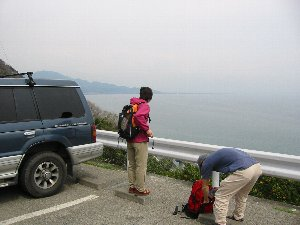
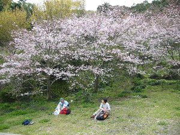
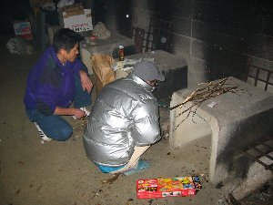
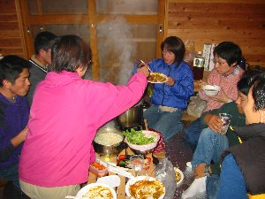

浜石岳ハイキング＆春の宴会 | ２００３年３月２９−３０日 |
|---|---|
| 日程と参加者：３月２９日（土） ①PM１時〜４時ハイキング ②５時〜宴会 ３０日（日） ③浜石岳軽くハイキング→イルカ試食→昼食 参加者：①〜③ べっしー、はち、きっかー ②〜③ のび太、ぞう、いづみ、まーしー、ＲＹＵＵ、 ②しゅがー、イチロー | |
|  ここから出発です（まずは下がります） |  気持ちいいね〜 |
| ①由比にある浜石岳までハイキングしてきました。 最初由比駅からスタートしようかと思ったのですが駐車場がなく、仕方なく薩捶峠駐車場に車を置く。 近いと思ったのに、駐車場からスタート地点の由比駅まで４５分もかかってしまった！ 多少曇っているが、天気予報では午後晴れのはず。元気に歩く。途中の桜が綺麗〜 途中桜の木の下でお昼にする。このときから天気が怪しくなる。 だいぶ町並みが眼下に見えてきた頃、ゴロゴロと空が鳴り出す。 これはヤバイ！天気予報信じて雨具なんて持ってないし。（教訓：山へ行く時は晴れていても雨具は持ちましょう） ぱらぱら降っていると思ったら、急にザーと降り出し、急いで木の下へ！ 小降りになったら出発。山頂まで行ってみようと言うことになる。（雨のためデジカメ撮らず） 山頂付近は見晴らしが良く、向こうの山に雷が落ちるのが見えた。（だから、ヤバイって！） 富士山も見えない山頂を後にして、今夜の宿泊地「青少年野外センター」へ戻り、買い出しに行く。 | |
|  外は雨。薪もなく大変でした |  みんな奪い合うようにカレー食べました |
| ②ＰＭ９：００ カレー、鍋が出来上がり、皆ひたすら食べる・・・ようやく飯にありつけた犬？のように・・ しかし、このカレーはマジに美味いっす。 市販のカレールーがこんなに美味くなったのは、なんでだろ〜？ よく炒めた玉葱？ガラムマサラ？ 生チョコやチーズケーキ(いづみ持込)を食べ始めるのは、なんでだろー？？？？？ 辛い物の後は甘い物が欲しくなる？ なんでだろー？？？？？ チーズケーキの終わりに、その紙をペロペロ舐めたくなるのは なんでだろー？？？？？・・・ 私(きっかー)自作のスモークチーズやマグロの刺身も入り混じり、ビール、日本酒、ワイン、チューハイ、何でも有り有り・・・パーティー。 パーティーは０時を回った後、覚えていないが、眠気に襲われた軟弱者達が隣のログへ徐々に逃げていき、一応無事終了した事になったとみんな思っているらしいが あ〜ここから先の危機は誰にも言えない・・・でも、チラッと・・・・・ ＲＹＵＵの甘い声が私の記憶が無くなるまで、耳に響くのだった。 朝・・・ホットケーキ、焼きバナナ、コーヒー、パン、ベーコン、ソーセージ 牛乳、鍋（の残り）スモークチーズ、レタス、卵、etc。朝から色々と食料が並び、食べ方も量も人それぞれ。 | |
 すんげー眠そう〜(+_+) |  ３０分の山登り。山頂目指したから登山？ |
| ③遅めの朝食後に浜石岳ハイキングへ！ ３０分ほどで山頂に着くも、富士山が見えず。ついつい、大の字で昼寝をしてしまう。 山を下り、魚屋に入ってマーシーがお土産を買う傍ら、イルカの煮付けのようなモノを頂く。結構美味しい。 由比に行ったら、「やっぱり桜エビを食べなくっちゃ！」と昼食したのだが、待ち時間が長くてツラかったです〜。（美味しかったよ） （いづみ感想） 今回も楽しく・面白かったわー、ありがとう♪ あれからRyuuの甘えた声が時々甦る・・・何とかしてー(^o^; （のび太感想） 今年の桜は山麓までで会場で楽しめなくって残念。夕食、特に楽しかったです。 キッカー、ハイキングの時は随分と足が痛そうだったね。あの足で雨の中を薩捶峠（麓）から山頂まで登ってしまうとは、凄い精神力。でも、悪化させないように充分気を付けてね。 | |